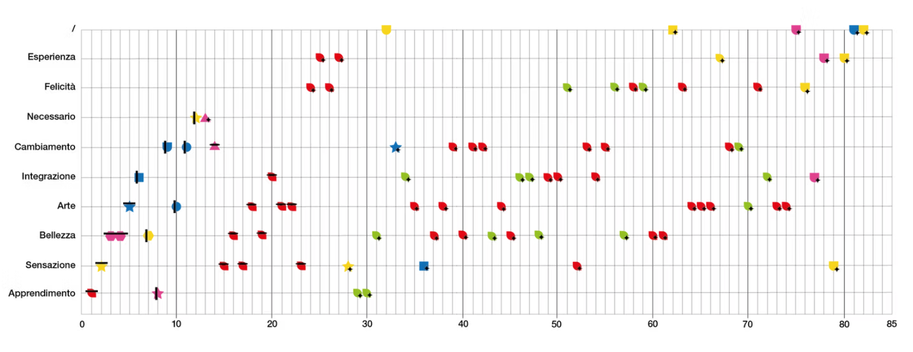

"Terra di Tutti", based in Capannori (Lucca, Italy), is a social enterprise that combines production with environmental and social responsibility. Behind its activities lies a complex network of data — history, processes, impact, and values — which is often difficult to communicate clearly. This thesis explores how Data Visualization can translate that complexity into accessible and meaningful visual narratives.
Through the analysis of both quantitative and qualitative data, the project transforms numbers and information into a coherent visual system capable of revealing impact and making the organization's values visible.
The project develops systemic research on "Terra di Tutti", structured around two fundamental dimensions — People and Things — which generate and sustain the organization's life. Through data mapping and analysis, the research explores how material reuse and human relationships intertwine to produce impact.
I implemented direct quantitative monitoring for materials and designed a shared inquiry system for over 80 registered individuals. The collected data was reorganized into thematic clusters and translated into experimental visualizations, moving from raw information to structured visual systems.


The visualization was translated into a wearable format: recycled denim aprons featuring fragments of data printed on the fabric. Manually produced through woodblock printing, each piece is unique, transforming data into a tactile and narrative object.
Each apron includes a QR code linking to a dedicated web page where the project, the data, and the material reuse process are explained in depth, providing context and revealing the systemic structure behind the collection.